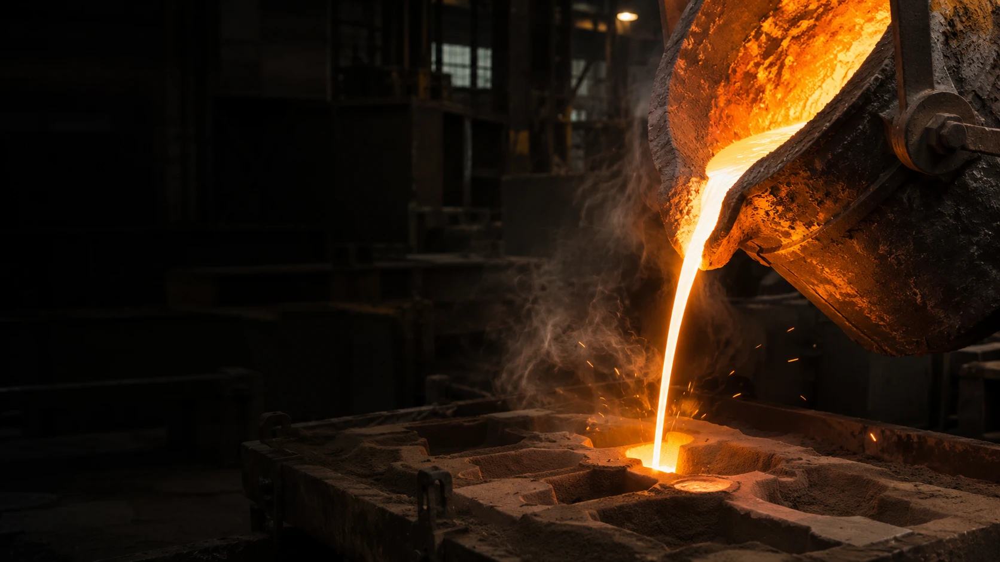

CASTING × MACHINING
02 / TECHNOLOGY技術とものづくり
熱を、かたちに。
技術を、確かさに。
溶かす。形づくる。仕上げる。
素材から製品へ。
鋳造と加工の経験が、一つの形になる。
FROM MOLTEN IRON TO A FINISHED FORM
製品・図面・別注品のご相談
Contact
お客様のものづくりを、ここから。052-361-6511 本社

溶かす。形づくる。仕上げる。
素材から製品へ。
鋳造と加工の経験が、一つの形になる。
製品・図面・別注品のご相談